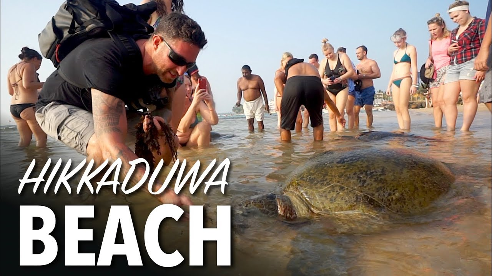

Hikkaduwa Turtle Hatchery
About The Hatchery
A well-known conservation initiative is the Hikkaduwa Turtle Hatchery, which is situated in the Sri Lankan coastal town of Hikkaduwa. It is devoted to preserving and safeguarding sea turtles, an essential component of Sri Lanka's marine environment. In order to protect turtle eggs, treat injured turtles, and spread awareness of the value of turtle conservation, the hatchery is essential.
What They Contribute
The Hikkaduwa Turtle Hatchery's main goal is to protect and raise sea turtle eggs, which are prey to predators and human activity on the beaches. Turtle eggs are collected by the hatchery from nests discovered on the beaches, and they are then carefully moved to protected places on the hatchery grounds. This guarantees their protection from wild animals and outside intervention.
The young are raised in specially constructed tanks until they are strong enough to be returned into the water when the eggs hatch. The hatchery team regularly oversees the health and development of the young turtles, giving them the attention and nourishment they require during this crucial time. The hatchery offers visitors the chance to watch the turtles hatch and even take part in the release of the young turtles back into the water.
What's For Us
The hatchery also functions as a learning facility, educating locals and tourists alike on the value of sea turtle conservation. They run educational programs, environmental seminars, and awareness campaigns to raise knowledge of the dangers facing sea turtles and to encourage environmentally friendly behaviors that will save their ecosystems.